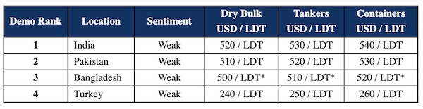

inWeekly Demolition Reports06/12/2022

Recycling markets are ambling towards the end of the year without any real impetus, ability, aggression, or even an apparent willingness to engage in discussions to buy, so volatile has the situation been over the last 2 quarters.
Prices have of course come off by about USD 200/LDT in the sub-continent markets since the stunning peaks witnessed over USD 700/LDT just earlier this year – for reference, on a standard Capesize Bulker, that is over USD 4 million lost on the residual value alone!
Bangladesh still remains largely absent on the buying front with a majority of Buyers unable to get central bank financing to open fresh Letters of Credit. There is also talk of the shortage of U.S. Dollars in the country easing once the they can agree to an IMF loan, but we are unlikely to see any clarity on this until early next year (at best). As such, Chattogram seems like it would be unavailable for the remainder of this year.
After the collapse of the currency and the government, Pakistan has yet to fully find their feet again and most End Buyers are extremely tentative and reticent in their offerings, leaving the market mostly a nonevent.
This really leaves only India as a viable sub-continent destination, which itself has endured turbulent times as the currency has once again depreciated into the high Rs. 81 against the U.S. Dollar, while local steel prices gained ground after last week’s volatile plummet, especially after the recent reduction in export duties on steel products.
Turkey on the far end remains lost, with levels of its own having plummeted about USD 250/MT and fundamentals still hampering any sort of recovery, amidst a pinching shortage of any tonnage.
It is therefore likely to be a bleak and muted end to the year, with some desperately needed stability on currencies, finance limits and steel plate prices, in order to bring nervous end buyers back to the table.
For week 48 of 2022, GMS demo rankings / pricing for the week are as below.

📄 Download PDF: Ship-recycling-market-insight-week-48-2022-No-Impetus.pdfSource: GMS,Inc. ,https://www.gmsinc.net/gms_new/index.php/web